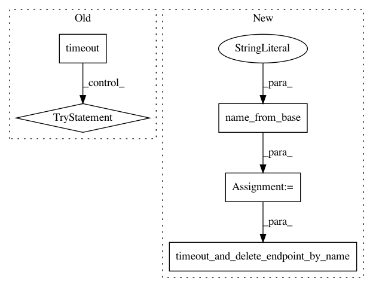

b38e4ca3161e36d60df57dd523b2ca0119f890c8,tests/integ/test_kmeans.py,,test_kmeans,#,26
Before Change
kmeans.fit(kmeans.record_set(train_set[0][:100]))
with timeout(minutes=15):
model = KMeansModel(kmeans.model_data, role="SageMakerRole", sagemaker_session=sagemaker_session)
predictor = model.deploy(1, "ml.c4.xlarge")
result = predictor.predict(train_set[0][:10])
try:
assert len(result) == 10
for record in result:
assert record.label["closest_cluster"] is not None
assert record.label["distance_to_cluster"] is not None
finally:
sagemaker_session.delete_endpoint(predictor.endpoint)
After Change
kmeans.fit(kmeans.record_set(train_set[0][:100]))
endpoint_name = name_from_base("kmeans")
with timeout_and_delete_endpoint_by_name(endpoint_name, sagemaker_session, minutes=15):
model = KMeansModel(kmeans.model_data, role="SageMakerRole", sagemaker_session=sagemaker_session)
predictor = model.deploy(1, "ml.c4.xlarge", endpoint_name=endpoint_name)
result = predictor.predict(train_set[0][:10])
In pattern: SUPERPATTERN
Frequency: 3
Non-data size: 5
Instances
Project Name: aws/sagemaker-python-sdk
Commit Name: b38e4ca3161e36d60df57dd523b2ca0119f890c8
Time: 2017-12-06
Author: mvs.usp@gmail.com
File Name: tests/integ/test_kmeans.py
Class Name:
Method Name: test_kmeans
Project Name: aws/sagemaker-python-sdk
Commit Name: b38e4ca3161e36d60df57dd523b2ca0119f890c8
Time: 2017-12-06
Author: mvs.usp@gmail.com
File Name: tests/integ/test_pca.py
Class Name:
Method Name: test_pca
Project Name: aws/sagemaker-python-sdk
Commit Name: b38e4ca3161e36d60df57dd523b2ca0119f890c8
Time: 2017-12-06
Author: mvs.usp@gmail.com
File Name: tests/integ/test_linear_learner.py
Class Name:
Method Name: test_linear_learner